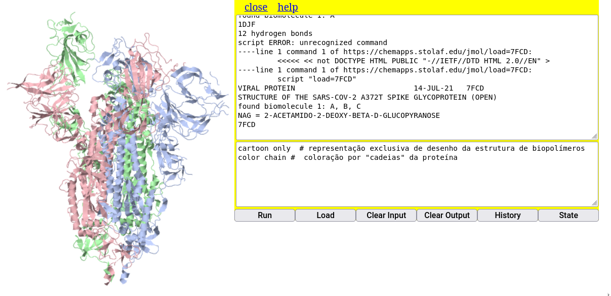

* Open local file # abre janela para buscar o arquivo do modelo no computador;
* Open URL # abre janela para buscar o endereço de internete que possui o arquivo
* Get PDB file # abre janela para inserir um código de macromolécula do site homônimo (proteínas, ácidos nucleicos, principalmente)
* Get MOL file # abre janela para buscar um arquivo *.mol
* Open script # abre janela para buscar um trecho de código no computadorAlguns comandos pra se aventurar nas moléculas voadoras
Objetivos:
1. Carregar uma molécula no Jmol de forma alternativa
2. Utilizar o Console para alguns comandos
1 Como carregar uma molécula no JSmol
O JSmol nada mais é do que o próprio Jmol, só que desenvolvido para ser utilizado em navegador de internet, e que usa entre suas linguagens o JavaScript (daí o S do JSmol).
Supondo que você já tenha aberto em seu navegador a janela para o applet do JSmol mas que, contrariamente ao que foi feito antes (nome da molécula ao final do site PubChem, você queira:
- carregar uma molécula a partir de outro banco de dados;
- carregar uma molécula cujo arquivo já esteja em seu computador
Bom, nesse caso você pode usar o mouse ou uma linha de comando, como preferir.
1.1 Carregando a molécula com o mouse
Para isto basta clicar com o botão direito do mouse no ecrã, como anteriormente, e selecionar File–>Load. As opções que se apresentam são:
A primeira opção é autoexplicativa (
Open local file), a segunda opção (Open URL) depende do endereço correto para um determinado modelo molecular, a terceira (Get PDB file) refere-se ao banco de dados Protein Data Brookhaven para biopolímeros, a quarta (Get MOL file) envolve a busca online em banco de dados específico para pequenas moléculas, e a última (Open script), a busca de um arquivo que contenha linhas de código do Jmol para um conjunto de ações. Como os livros didáticos permeiam estruturas moleculares pequenas, normalmente associadas aos grupos funcionais da Química Inorgânica e Orgânica, bem como exemplos específicos em áreas como Saúde, Biotecnologia e Indústria, incluindo também alguns modelos de macromoléculas, pode-se concluir que é mais provável que você utilize a busca remota de pequenas moléculas (Get MOL file), moléculas contidas em seu computador (Open local file), e/ou biomacromoléculas (Get PDB file).
O carregamento de pequenas moléculas é idêntico ao que foi experimentado adicionando-se o nome do modelo ao final do endereço do JSmol. O carregamento remoto para modelos de proteínas, enzimas e ácidos nucleicos envolve o conhecimento do código PDB desses, ou busca de palavras-chave no sítio Protein Data Brookhaven.
Já o carregamento de moléculas guardadas no PC envolve algumas poucas etapas, a saber:
- Obtém-se o modelo da molécula pela internete, ou o constroi;
- Baixa-se o arquivo correspondente ao modelo (geralmente com um atributo *.mol, *.cif, *.cml, *.sdf, entre mais de 60 formatos);
- Carrega-se na página do JSmol por dois meios alternativos:
1. Por clique de mouse: File --> Load --> Open local file ;
2. Por arraste do arquivo da pasta onde se encontre para a aba do JSmol no navegador. Exemplificando, digamos que você queira visualizar a estrutura da aspirina baixada em seu computador.
Agora é com voce:
- Acesse o site do Pubchem: https://pubchem.ncbi.nlm.nih.gov/
- Digite no campo
aspirine clique na imagem 3D que aparece; - Baixe o modelo clicando em
Download Coordinates, e seguindo-se com a opçãoSDF; - Clique no 1o. link pra abrir as informações da aspirina Baixe o modelo estrutural da aspirina no PubChem ;
- Abra o Console do JSmol no navegador (clique no ecrã com o botão direito do mouse e selecione “Console”);
- Alternativamente:
- Localize o arquivo no PC por “File–>Load–>Open local file”, clicando depois em “Load” para o carregamento;
- Clique no arquivo baixado (“aspirin.sdf”, por ex) e arraste-o diretamente para a janela do JSmol.

### Carregando a molécula por linha de comando
O carregamento de um modelo em particular por linha de comando restringe-se à sua busca pela internet, em banco de dados ou páginas da web. Para isso, abre-se o Console como já explicado. A parte de cima serve para apresentação dos resultados dos comandos, e a parte de baixo, para sua digitação. Nesse caso, clique no quadro inferior do Console e digite o comando de carregamento, aqui exemplificado para um alcano:
load $alkane O Console do Jmol, ainda que constitua uma linguagem própria de programação de comandos, possui uma vantagem interessante sobre demais linguagens de programação: é possível efetuar o comando pelo Console tanto com letras maiúsculas como minúculas, e tanto no singular como no plural.
Você pode tentar com outras moléculas, como aspirin, cholesterol, phenol etc (nomes em inglês, por conta do banco de dados). Para recuperar uma linha de comando que foi escrita antes, basta navegar entre os comandos que foram utilizados com as setas para cima e para baixo do teclado (histórico de comandos).
Os modelos moleculares são carregados a partir do banco de dados Cactus - CADD Group Chemoinformatics Tools and User Services.
1.2 Construindo a molécula por SMILES
Não, não é a tradução literal para “sorrisos”, e sim uma codificação de estruturas para texto. Nessa formatação, dá pra carregar uma molécula por códigos SMILES, e o sistema preenche com átomos de hidrogênio complementares.
Experimente essa formatação no endereço abaixo.
https://chemapps.stolaf.edu/jmol/jmol.php?model=C Em seguida, substitua o modelo do link, “model=” pelos códigos SMILES que seguem, alternativamente:
1. Ligação simples: CC, CN, CO
2. Ligação dupla: C=C, C=N, C=O
3. Ligação tripla: N%23N, CC%23C
Obs: Apesar de parecer estranho (e é !), o código para a ligação tripla visa contornar o comando do *SMILES*, *"#"*, e que é interpretado de modo diferente em endereço de internet.1.3 Carregando biopolímeros (proteínas, enzimas, ácidos nucleicos) por linha de comando
Como mecionado acima, o carregamento de macromoléculas biológicas dá-se por identificação de um código alfanumérico da mesma frente ao banco de dados PDB-Protein Data Bank. Após obter esse código, você poderá carregar o biopolímero pelo link online ou pelo Console. Mas saiba que são instruções diferentes (e não me pergunte por quê?!):
Pelo Console:
load=XXXX # onde XXXX é o código da macromolécula
# Obs: Perceba que o sinal de "$" é trocado por "=" para o PDB
Pelo link online:
pdbid=XXXX
# Obs: Como para o link é mais "truquento", segue um exemplo completo para a bungarotoxina, um veneno proteico de serpentes:
# https://chemapps.stolaf.edu/jmol/jmol.php?&pdbid=1ik8 Isso pode ser ilustrado por carregamento remoto da proteína espícula (spike) do vírus Sars-Cov-2, tal como segue:
1. Entre no site do PDB-Protein Data Bank - https://www.rcsb.org/ ;
2. No campo de busca, digite "spike sars-cov-2" ;
3. Selecione a 1a opção (o site vai direcionar para várias estruturas da proteína espícula) ;
4. Memorize o código da 1a. opção (embora qualquer uma também sirva), ou seja, "7FCD" ;
5. Digite a linha para carregar a proteína: "load=7FCD" (tanto faz se maiúsculas ou minúsculas) A representação padrão para proteínas no Jmol é a de arame (“wireframe”). Para visualizar a proteína do vírus de modo mais “amigável” e semelhante ao que aparece em textos ou na internet, digite os comandos abaixo, sua primeira sequência em linguagem de programação.
cartoon only # representação exclusiva de desenho da estrutura de biopolímeros
color chain # coloração por "cadeias" da proteína
Proteínas, enzimas, ácidos nucleicos, e associações macromoleculares são mais pertinentes ao estudo da Bioquímica estrutural. Nesse sentido lhe convido a visitar uma parte do website que possui descrições e representações detalhadas de estruturas da Bioquímica com auxílio do Jmol.